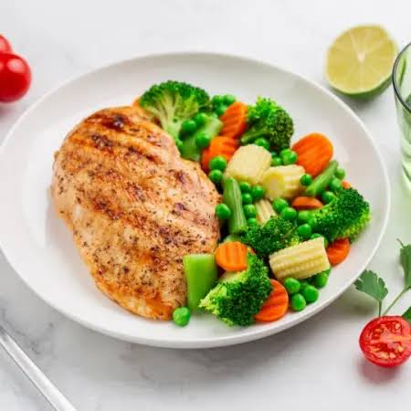
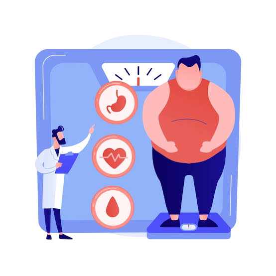
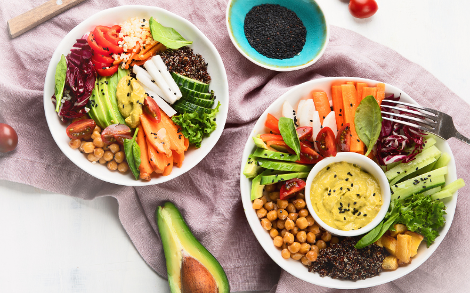

Bienvenido a NutriVida
Somos una clínica de nutrición y dietética fundada en 2016 en Temuco, Región de La Araucanía. Ayudamos a nuestros pacientes a controlar su peso, cuidar enfermedades metabólicas, mejorar su rendimiento deportivo o adaptar una alimentación vegetariana o vegana, con seguimiento en cada sesión.
Ver catálogo de planesQuiénes somos
Nuestro equipo de cuatro nutricionistas atiende pacientes con objetivos muy distintos. La mayoría llega por recomendación de otro paciente o derivación médica, y vuelve cada 15 o 30 días para una sesión de control.
Nuestras especialidades

Control de peso
Planes progresivos con medición periódica.

Enfermedades metabólicas
Acompañamiento coordinado con tu médico.
Nutrición deportiva
Energía y recuperación para tus entrenamientos.

Vegetariana y vegana
Planes completos sin productos de origen animal.
Aprende sobre alimentación saludable
Antes de tu primera sesión, este video te ayuda a entender qué esperar del acompañamiento de un nutricionista.